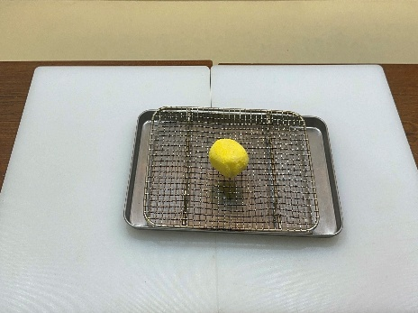
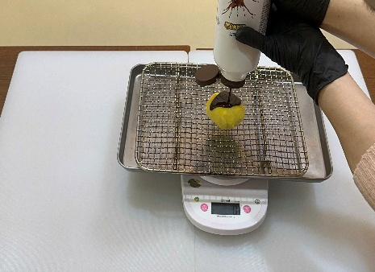
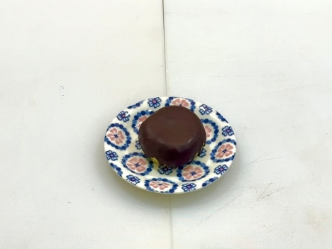

| 메뉴명 | 왁뿌 찹쌀떡(초코, 우유) |
|---|---|
| 판매가격 | 2,900원 |
| 원재료 | 냉동 찹쌀떡, 초코쉘 |
| 사용 부자재 | 앞접시, 유산지(또는 철망) |
※ 찹쌀떡이 냉동에서 꺼냈을 때 많이 딱딱하면 포장지를 살짝 뜯어 전자레인지에 10초간 돌려준다.
※ 초코쉘이 굳으면 잘 안 나올 수 있어 뜨거운 물에 용기채 담가 녹인 후 잘 흔들어서 뿌려준다.
※ 철망 구입처: 다이소, 주방용품점, 쿠팡 등에서 "돈까스받침" 또는 "스텐바트망" 검색
조리방법

1
냉동 찹쌀떡 한 개를 꺼내 유산지 또는 철망에 올려 손으로 살짝 눌러 모양을 잡아준다. (*유산지는 떡이 붙을 수 있어 철망 추천)
냉동 찹쌀떡 한 개를 꺼내 유산지 또는 철망에 올려 손으로 살짝 눌러 모양을 잡아준다. (*유산지는 떡이 붙을 수 있어 철망 추천)

2
찹쌀떡에 초코쉘이 골고루 덮이게 15g을 뿌려준다.
찹쌀떡에 초코쉘이 골고루 덮이게 15g을 뿌려준다.

3
1분 정도 초코가 굳으면 앞접시로 옮겨 담아 제공한다.
1분 정도 초코가 굳으면 앞접시로 옮겨 담아 제공한다.